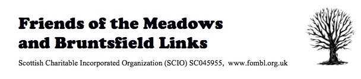

FOMBL have been working for several years with Edinburgh World Heritage and local historian Graeme Cruikshank on this project.
Funding is in place to install 8 panels which will highlight the history of the park along with the most important monuments and buildings. FOMBL hold some funds in addition to those provided by EWH.
The panels have now been approved by planning but some work is still needed to finalise text and images. It is hoped that installation can take place before the end of this year.
Over the years FOMBL have, in liaison with CEC playgrounds officer, instigated the installation of new equipment especially for toddlers. We have pushed for installation of self closing gates and requested that all playgrounds should have these fitted.
Four new play items have been installed (trampoline, see-saw and two climbing/slide frames).
We raised £8000 from the community fund and Forbes nursery to install a new playhouse and wooden train at the South Links toddler fenced area beside Whithouse Loan.
It is hoped this will be installed in mid summer.
We have pushed for the repair of the Archimedes screw water feature at the East Playground and pleased to say this will be in working order soon.
A new trampoline has also been proposed.
The FOMBL tree group have planted 18 trees this year and carry out regular watering, but due to dry weather several of these may not survive.
A further 20 trees have been approved by the CEC forestry officer to be planted in the autumn at South Links. Suitable water sources is proving to be a huge problem and we are pushing for more ccessible water points to be provided.
The installation of a table tennis table adjacent to the east playground has been a huge success and we hope to organise the installation of another one in due course.
Over the years we have, along with CEC parks, instigated the installation of 6 pieces of exercise equipment and due to their popularity hope to augment these in the future.
Fombl volunteers have worked alongside Buglife and others to create two wildflower meadows. These are work in progress but is hoped to continue adding Scottish annual and perennial plants / seeds every year. Further unmown areas are being created to encourage pollinators and it is hoped we can work more closely with council officials to devise a longer term agreed mowing plan along with planting of lower bushes and hedgerows.
FOMBL raised funds to repair one of the few remaining wooden benches which are gradually being replaced by metal benches (which are not so comfortable but need less maintenance)
It is hoped to raise more funds to repair more of these benches.
21 high quality bird boxes have been installed on behalf of FOMBL and birds have been observed nesting this spring.
This has become an ongoing problem with volunteers having to clean the surfaces on a regular basis. The surfaces became so damaged that they had to be replaced and we are trying out clear protective film to see if that helps.
With the new council in place we are waiting for the relevant committee to determine the next stage of a possible replica Jawbone installation. The restored ones can only be kept indoors due to their fragile state, preferably in a public museum but this has not been decided. Options for erecting a suitable replica in a material such as bronze or another material has still to be decided.
Neil Roger 24/6/22